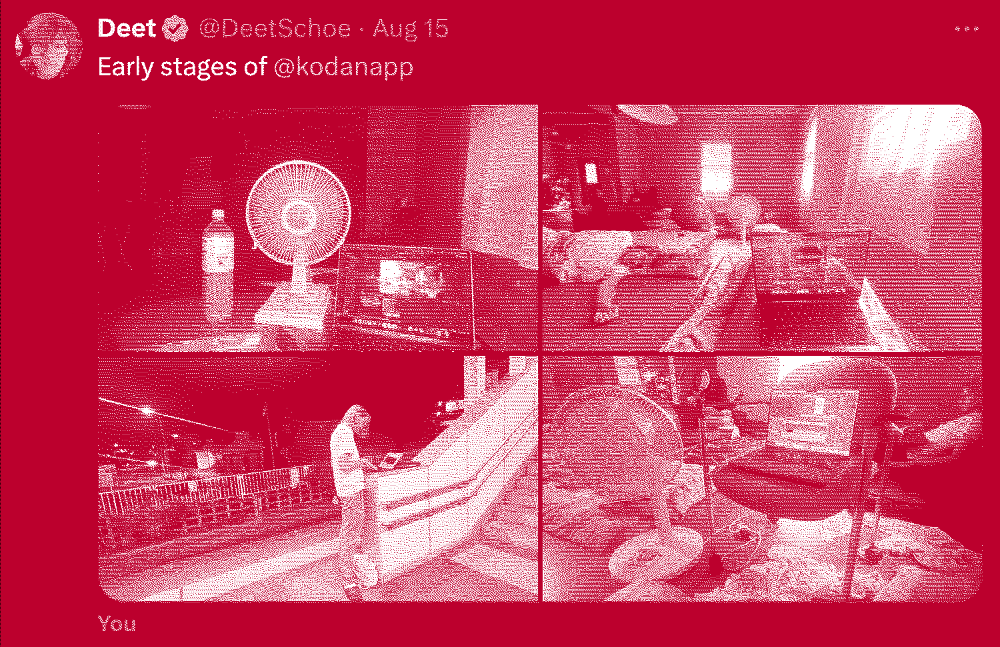

I became obsessed with building what I called the Kōdan Terminal (I think I called it this because it was all done in the terminal and wasn't intended for any end user to interface with directly). I figured out how to make Llama take a story, expand it into a bigger story, split that bigger story into specific scenes, have it make image prompt for each scene, have it come up with the voiceline & speaker for that scene, and then an image generation & audio generation model to make the content. I was using Llama 3.1. Learning how to make Llama listen to me was a challenge. I learned that it really helped to give it diverse examples (so it doesn't over-fit) and to give it the right amount of context/examples that it is specific to what you want but not so much that it forgets the instruction that you gave it. It was really fun staying up all night coding this base version.

The most magical moment for me was waking up to see that when I let Kōdan run over night, it didn't error at all. I asked it to create episodes of an entire series ("Pixel Paradise") & it would generate episode after episode without failing. I was super excited by this & it felt like I had spawned a new creature into existence that could work while I slept.
I called this an MVP at the time, but my view on what constitutes an MVP has changed a bit. I now think about an MVP as something that is minimally viable to solve an actual person's problem, not just something that "works".